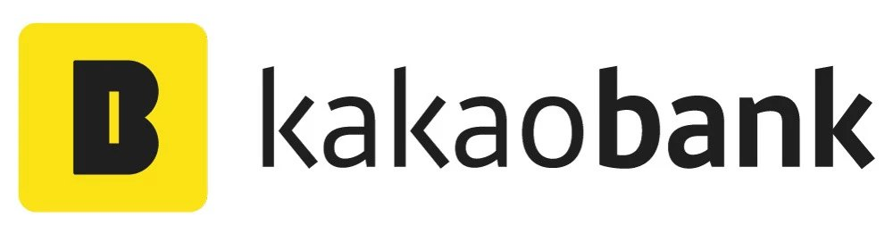
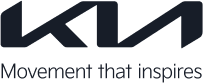

KWDC23
Get Ticket
KWDC2023Korea Wide Developer Conference
2023. 07. 18. 10:30 a.m.
Coex Grandballroom, Seoul
Get Ticket
Together,
we can make great things happenKorea Wide Developer Conference는
한국 Apple 생태계 구성원들을 위한 가장 큰 축제예요.
we can make great things happenKorea Wide Developer Conference는
한국 Apple 생태계 구성원들을 위한 가장 큰 축제예요.
2009년 아이폰이 한국에서 처음 정식 발매된지 어느새 14년이 흘렀어요.
그동안 한국 Apple 생태계에서 활약해 온 개발자, 기획자, 디자이너 등의 다양한 구성원들 덕분에 Apple 생태계는 무럭무럭 자랄 수 있었죠.
새로운 개발언어, 디자인, 가이드라인들의 등장은 때때로 우리를 힘들게 하기도 했지만, 그 경험들 덕분에 우리는 단단한 뿌리와 함께 성장했어요.
WWDC23에서 발표될 내용들은 우리에게 어떤 변화를 가져다줄까요?
7월 18일 서울에서 함께 모여, 앞으로 만들어나갈 더 다양한 가치들에 대해서 소통해보아요.
adiOS세상에서 가장 라이트하고
캐쥬얼한 iOS 컨퍼런스
캐쥬얼한 iOS 컨퍼런스
AsyncSwiftAsyncSwift는 Apple 생태계 속에서 헤엄치는 사람들의 커뮤니티입니다.
우리는 Swift라는 공용어를 매개로 기획자, 디자이너, 개발자들이 어우러져
지식과 경험, 기회를 공유함으로써 함께 성장하기를 꿈꿉니다.
우리는 Swift라는 공용어를 매개로 기획자, 디자이너, 개발자들이 어우러져
지식과 경험, 기회를 공유함으로써 함께 성장하기를 꿈꿉니다.
Let'SwiftLet’Swift는 개발자 커뮤니티가 주관하고 대한민국의 Apple 개발자들이
자발적으로 만들어나가는 커뮤니티입니다.
누구나 참여할 수 있는 네트워크를 통해 보다 다양한 이야기를 나누는
대화의 장을 마련합니다.
자발적으로 만들어나가는 커뮤니티입니다.
누구나 참여할 수 있는 네트워크를 통해 보다 다양한 이야기를 나누는
대화의 장을 마련합니다.
Sponsors
Keystone
Platinum
Platinum
Sliver
Sliver
Sliver
추후 공개됩니다.
Bronze
Special
추후 공개됩니다.
Timetable
Track 1
09:45 - 10:30
Check-in
10:30 - 10:45
Keynote
11:00 - 12:45
TBA
12:45 - 14:00
점심시간
14:00 - 16:00
TBA
16:00 - 16:10
Closing
Track 2
09:45 - 10:30
Check-in
10:30 - 10:45
Keynote
11:00 - 12:45
TBA
12:45 - 14:00
점심시간
14:00 - 16:00
TBA
16:00 - 16:10
Closing
Track 3
09:45 - 10:30
Check-in
10:30 - 10:45
Keynote
11:00 - 12:45
TBA
12:45 - 14:00
점심시간
14:00 - 16:00
TBA
16:00 - 16:10
Closing
Organizer
unnnyong
2017년부터 한국과 일본 iOS 개발자 커뮤니티의 기여를 시작한 소통형 개발자.
2022년에는 포항에서 동료들과 함께 AsyncSwift를 만들고, 겪는 세무, 회계의 소용돌이 속에서 Organizer v2.0로 성장 중이에요. 모두와 함께 성장할 수 있다는 가능성은제 가슴을 뛰게해요 !
2022년에는 포항에서 동료들과 함께 AsyncSwift를 만들고, 겪는 세무, 회계의 소용돌이 속에서 Organizer v2.0로 성장 중이에요. 모두와 함께 성장할 수 있다는 가능성은제 가슴을 뛰게해요 !
Lingo
애플 생태계 안에서 해적선을 운영하는 캡틴 링고후크. 검은 코딩토끼를 본 적이 있다면 당신도 이미 해적선의 선원.
Godrm
달콤한 스위프트와 후덕한 오브젝티브-C의 혼혈왕자
Atlas
모니터 바깥 세상에서 커피 한 잔을 함께 즐길 수 있는 대화법을 연구하고 있습니다!
커피 한 잔 어떠세요? ☕️
커피 한 잔 어떠세요? ☕️
Noah
Live curiously!
호기심으로 더 성장하는 개발자가 되고 싶습니다:) 개발 이야기를 하는 것을 가장 좋아합니다 :)
호기심으로 더 성장하는 개발자가 되고 싶습니다:) 개발 이야기를 하는 것을 가장 좋아합니다 :)
SongCool
유저리서치, 제품디자인, 초록들과 조경에 관심이 많은 메이커 SongCool입니다.
szzang
다양한 사람들과 많은 이야기를 나누는것을 좋아하는 개발자 입니다 :)
Leeo
iOS 커뮤니티에 도움을 받아 성장하고 지금은 커뮤니티에 도움을 돌려주고 있습니다. 더 많은 사람들을 만나 다양한 이야기를 듣고 싶어요!
황지희 (Jee.e)
빠른 길보다 바른 길을 가는, 꾸준함의 힘과 도전의 가치를 아는 디발자입니다 :D
이동헌
즐거운 개발 문화를 만들어 나가고 싶어요.
pete
실례지만, 어떻게 지평 좌표계를 고정하셨나요?
Dora
물음표 해결에 집요한 보통의 디자이너입니다. 사람 알아가는 것을 좋아해요!
Sujin Lee
HIG 톺아보기가 취미입니다. 스티브 잡스의 ‘사람과 아이디어는 마찰과 소음을 통해 아름답게 빛나게 된다’는 말을 좋아합니다. 이전에는 PM으로 일했고, 현재는 IT업계를 지망하는 분들에게 IT업계 Business 직무의 재미를 전파하고 있습니다.
Toby
세상을 더 편리하게 바꾸고 싶은 iOS 개발자 Toby입니다!
vivi
🗣️말하기 👂듣기 ✍️쓰기를 좋아하는 개발자 vivi 입니다!
ian
세상을 이롭게 하는 기술력을 갖추고 싶습니다.
KangKyung
러닝과 고양이를 사랑합니다😻
Selina
음악을 사랑하는 개발자입니다!
Jiin Heo (Jini)
저는 html로 코딩하는거 좋아합니다.
📍
Coex Grandballroom, Seoul
Ticket
₩68,000
티켓 구매
· 티켓은 총 1,100매 입니다.
· 티켓 종류에 상관없이 참가자들은 행사에서 제공되는 세션, 이벤트 참가, 굿즈를 수령할 수 있습니다.
· 티켓은 한정된 수량으로 판매됩니다. 판매 일정보다 빠르게 매진될 수 있습니다.
Scholarship Ticket
₩45,000
티켓 구매
· 티켓은 총 150매 입니다.
· 티켓 종류에 상관없이 참가자들은 행사에서 제공되는 세션, 이벤트 참가, 굿즈를 수령할 수 있습니다.
· 티켓은 한정된 수량으로 판매됩니다. 판매 일정보다 빠르게 매진될 수 있습니다.